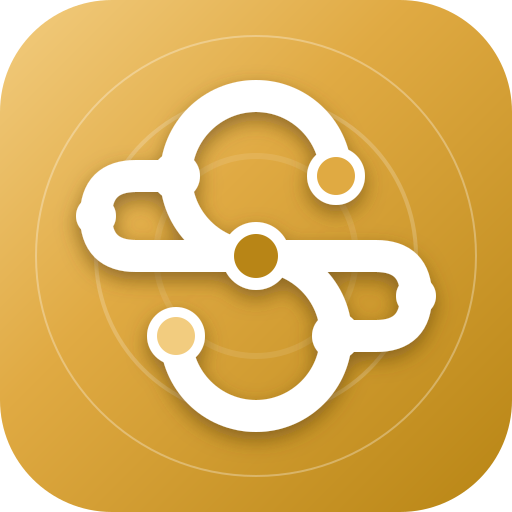
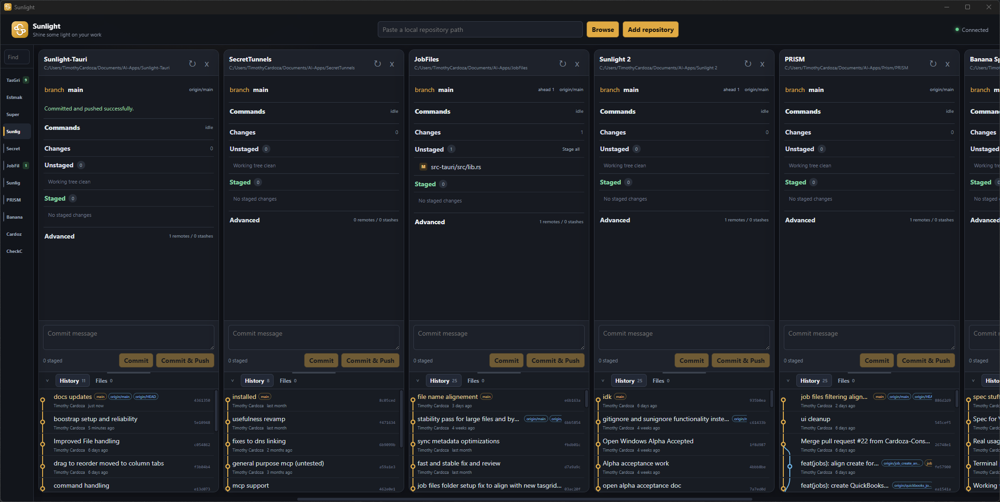

Sunlight
Shine some light on your work
A local multi-repository Git desktop app. Open several checkouts side by side, stage and commit, browse history, and keep a command such as bun run dev running in the same column.

Requires Git. Install it first and check that git --version works in a terminal. Install any tools needed by your repository commands separately.
Windows may show SmartScreen until the installer is signed with Authenticode. On Apple Silicon macOS, open System Settings → Privacy & Security and allow the ad-hoc signed app. Sunlight checks for updates and asks before installing. Apache License 2.0.